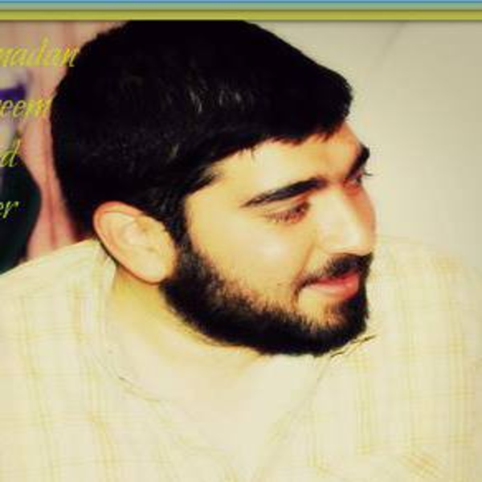

AbdAllah M A Elsheikh
Ph.D. Student · DANSA Lab
Data scientist and researcher with over 10 years of experience in machine learning, data mining, and applied analytics, with a strong focus on healthcare and bioinformatics. Current research centers on privacy-preserving techniques in foundation models, including methods for privacy-utility quantification impact. Published in bioinformatics and health informatics, with expertise spanning statistical modeling, natural language processing, and data visualization. Holds an MSc in Computer Science from the University of Calgary.